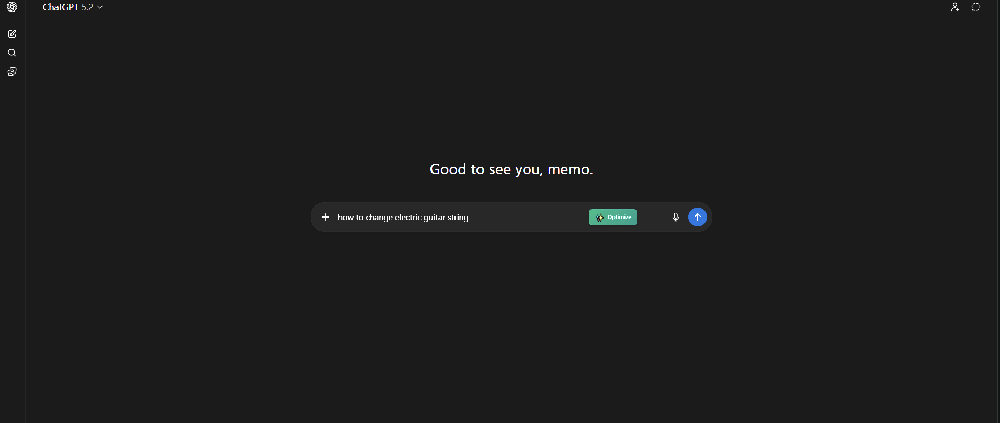

// Engine Specs
Engineered for Efficiency.
Everything you need to manipulate context windows, optimize token usage, and run heuristic processing locally without unnecessary API calls.

Compress
Token Optimizer
Reduce LLM costs without losing meaning. Set your max token limit and let our compression algorithm distill your verbose prompts into hyper-efficient queries.
Seamless Integration
Optimize right where you type. A native 'Optimize' button integrates directly into your favorite AI chat interfaces like ChatGPT.

Context Manager
Ingest local files and folders effortlessly for built-in RAG workflows.
Live Sync
Real-time prompt compilation and status checking directly from the UI.
Offline Mode
Offline Heuristic Engine
Why send data out when you can process it locally? Fast, local heuristic compilation without making a single LLM call. Keep your data private and your latency at zero.